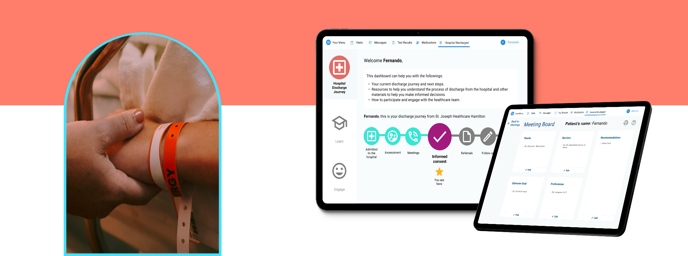
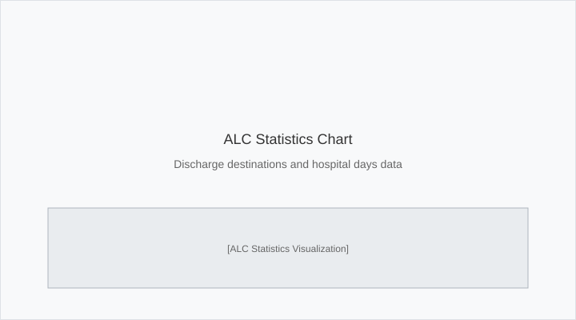
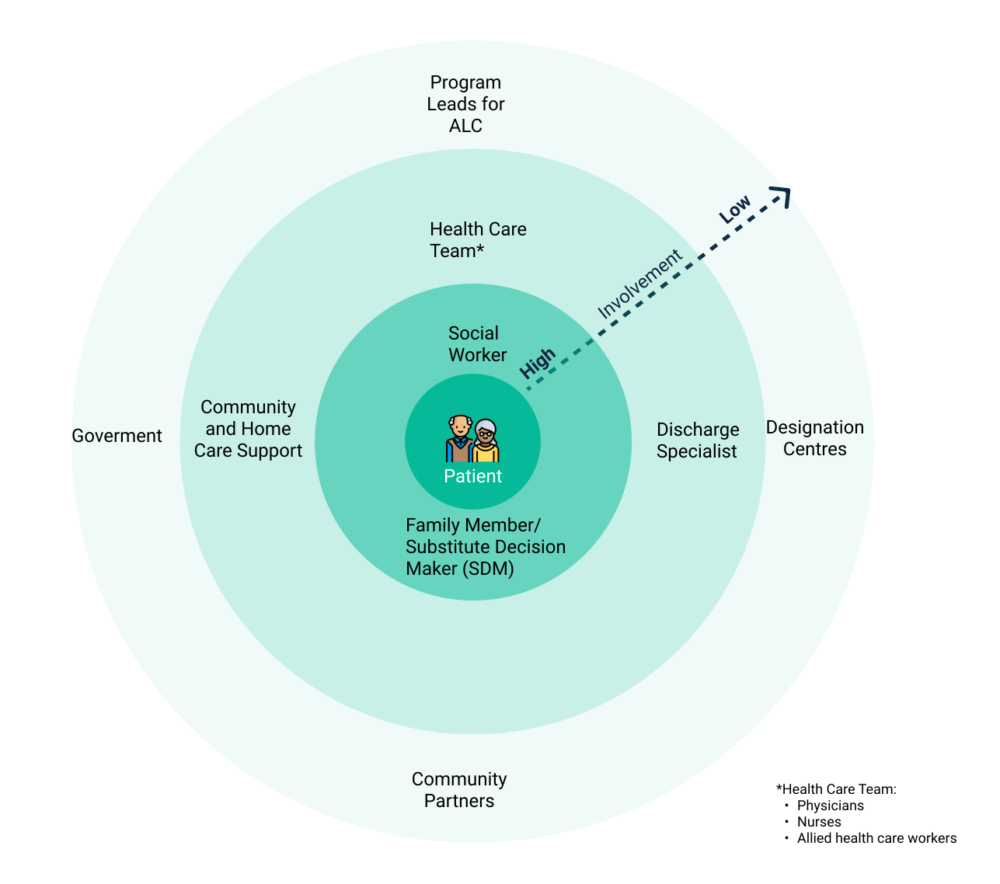
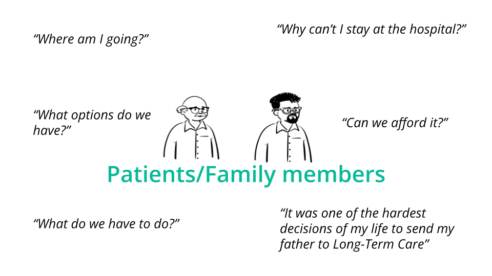
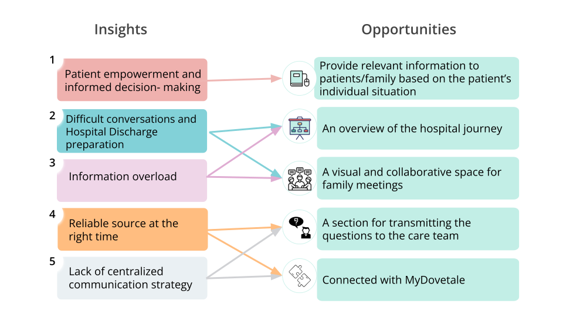

Hospital Discharge Journey Tool
A collaborative and interactive tool to help patients, family members, and hospital staff with discharge planning.

Overview
In Canada, a standardized definition of designated Alternate Level of Care (ALC) is given to patients who are medically stable but cannot be discharged. The Canadian Institute for Health Information reports that ALC accounts for up to 14% of Canadian hospital days, utilizing up to 7,500 acute care beds annually.

Text description of the ALC statistics
Titled “ALC – St. Joseph’s Healthcare Hamilton”, dated 11 June 2021.
Two headline figures:
- 1 in 13 beds are ALC.
- 53% of ALC-designated patients are waiting for Long-Term Care and Transitional care.
Admission bed types are grouped around an illustration of a patient in a hospital bed: Acute Care, Rehabilitation, Complex Care, and Mental Health.
An arrow labelled “Go to” leads to discharge destinations: Supervised or assisted living, Rehab (high intensity), Palliative Care, Home with Supports, Mental Health Bed, Complex Care, and Long Term Care.
St. Joseph Healthcare Hamilton Hospital and McMaster University collaborated to work on this project. I had the pleasure of being part of this significant project for almost a year.
Challenge: The challenge was that there was a communication gap between patients, families, and staff was one of the barriers to a smooth hospital discharge journey. The gap affected the patient flow in the hospital and the experience of these patients and family members.
Outcome: The work ended in the creation of a collaborative and interactive prototype to help patients, family members, and hospital staff with discharge planning.
My Role:
UX Researcher
Team:
Project Supervisor
UX Researcher
Research Student
Timeline:
8 Months
1. Initial Research
We conducted initial research during the discovery phase to gain insights into the basic understanding of the process of the hospital discharge journey, its challenges, and the experience of the patients who are heavily involved in the process and what has been done about it in Canada and other countries around the world.
1.1. Key Findings
- The literature review confirmed our insight about the importance of having a conversation with patients/family members because it provides more time for planning and surprises, but sometimes it is difficult when they are not ready to have the conversation.
- Despite not having access to patients before the interviews, we had found a case from the news about a family of a designated ALC patient discussing the financial impacts and the high fee, and they were not much aware of them due to a lack of communication which confirmed our insights further.
2. User Interviews
After initial research, we dived into primary research, where we conducted 25 in-depth interviews with social workers, hospital discharge coordinators, family members and Patient and Family advisors.
The purpose was to understand who is involved in the patients' hospital journey and gain hidden insights into the experience of patients and their family members.

Text description of the stakeholder map
Concentric circles place stakeholders by how closely involved they are in a patient’s discharge. A diagonal axis labelled Involvement runs from High at the centre to Low at the outer edge.
- Centre: the Patient.
- Inner ring: Family Member / Substitute Decision Maker (SDM), and Social Worker.
- Middle ring: Health Care Team, Community and Home Care Support, and Discharge Specialist.
- Outer ring: Program Leads for ALC, Government, Community Partners, and Designation Centres.
A footnote defines the Health Care Team as physicians, nurses, and allied health care workers.
The following are the direct quotes showing the gap in communication when it comes to hospital discharge.

Read the quotes as text
Two illustrated figures labelled Patients / Family members, surrounded by six quotes:
- “Where am I going?”
- “Why can’t I stay at the hospital?”
- “What options do we have?”
- “Can we afford it?”
- “What do we have to do?”
- “It was one of the hardest decisions of my life to send my father to Long-Term Care.”
In this stage, we synthesized the information from interviews and literature review to create order from chaos. Miro tool truly helped with documentation and collaboration.
3. Journey Map
After going through several iterations, I created a comprehensive journey map demonstrating the flow for the care team, patients, and family members. It helped us understand and visualize what steps the members take in the hospital discharge journey, as well as their feelings and thoughts. When we showed it to the senior hospital discharge coordinator, she was impressed with the comprehensive visual view of the complex hospital discharge, which could be useful for future people working on the project.

Text description of the journey map
Titled “Alternate Level of Care: Task Analysis”. Three swimlanes — the care team, the patient, and the family member — run across five stages. A legend distinguishes the care team path, family member path, patient path, and points where they intersect.
Stage 1 — Awareness. The patient is admitted to hospital, typically after a fall, with chronic conditions, or as a re-admission. The care team calls the patient’s substitute decision maker, either a family member or power of attorney, and the family member comes to the hospital to support the patient and act as decision maker. Medical and functional assessments are carried out, the team evaluates whether the patient is at risk of being ALC designated, and an initial assessment reviews the patient’s medical and functional ability, home living situation, and financial state.
Stage 2 — Communicate & Plan. A family meeting is scheduled and medical and functional experts are invited. The experts share the results of the assessments; the patient and family ask questions in a Q&A session; the team discusses the level of care needed, giving recommendations and addressing barriers and challenges. The case is reported to the manager or discharge specialist, a Home First Plan is proposed, and alternative discharge plans are discussed to bring family and patient onto the same page.
Decision point. A diamond asks whether the patient and family agree with the Home Care Plan. If no, the process loops back to discussing alternative discharge plans. If yes, it continues.
Stage 3 — Discharge Decision. The patient and family make the final decision and give consent.
Stage 4 — Waiting. The ALC order is initiated and the ALC data flowsheet updated. Referrals are sent depending on the type of care. Eligibility is determined, and if eligible the patient is ALC designated and a discharge date set. The team follows up with patient and family through the application process. The waiting period lasts anywhere from a few days to months or years.
Stage 5 — Discharge. Patients are discharged temporarily and go through the long-term care application for their final destination. Four routes are shown, each leading to long-term care: transitional care, home care, hospital inpatient service, and others such as retirement or rehabilitation.
Opportunities identified along the journey:
- Admitted to hospital — “It is crucial for the care team to discuss discharge planning with patients and family members as soon as they are admitted, but sometimes patients and family are not mentally ready to have that conversation yet.”
- Initial assessment — “Until our family meeting, we had no idea what was happening to my mother-in-law. I wish there was more communication around this.”
- Sharing medical and functional status — “Families are overwhelmed with information presented at the hospital, because everything is done verbally and on a simple worksheet.”
- Q&A — “Sometimes they don’t know what to ask.” A space for frequently asked questions could help families know what to ask before it is too late.
- Understanding level of care — “The patient’s relatives are strong advocates, however they might not have the education or training to understand the level of care their loved ones need.”
- Making a choice and giving consent — a summary of meetings, plus relevant resources, would help patients and families make an informed choice before consenting.
- Follow up — regular updates would help with uncertainty during the wait.
- Discharge — “Sometimes ALC patients are shocked when it’s time to be discharged, because time has passed since they decided, and they need time to process it.”
Source: St. Joseph’s Healthcare Hamilton. Content and design created by Vanessa Almendariz and Negar Deilami; icons by Flaticon.
4. Impact Features
The chosen idea was a collaborative and interactive tool to help with the following:
- Help the Care team start difficult conversations.
- Engage patients and their family members in family meetings.
- Give patients and family members effective information on how the system works.
The following is the summary of our main insights discovered around the communication gap and the potential opportunities that can be addressed.

Text description of the insights and opportunities
Two columns — Insights on the left, Opportunities on the right — joined by arrows.
Insights:
- Patient empowerment and informed decision-making
- Difficult conversations and hospital discharge preparation
- Information overload
- Reliable source at the right time
- Lack of centralised communication strategy
Opportunities:
- Provide relevant information to patients and family based on the patient’s individual situation
- An overview of the hospital journey
- A visual and collaborative space for family meetings
- A section for transmitting questions to the care team
- Connected with MyDovetale
How they connect: insight 1 leads to the first opportunity. Insights 2 and 3 both feed the hospital-journey overview and the collaborative meeting space. Insights 4 and 5 both feed the question-transmitting section and the MyDovetale connection.
5. Style Guide for Older Adults
After our first usability test of the first prototype, we noticed that users had difficulty navigating and using the prototype. Therefore, we went back to the prototype phase and reviewed who our users were. Our users are older adults who have different cognitive abilities.
Therefore, it was necessary to change the prototype to introduce each feature and screen gradually instead of all at once. This would help us avoid overlaps of elements on interfaces to clarify their purpose.
6. Final Designs
7. Reflection
- Journaling and documenting observations and brainstorming sessions are important.
- It is important to be aware of unconscious bias in the design, thus it is important to make sure the ideas and prototypes are being tested thoroughly.
- The learning curve significantly increased through rapid prototyping.